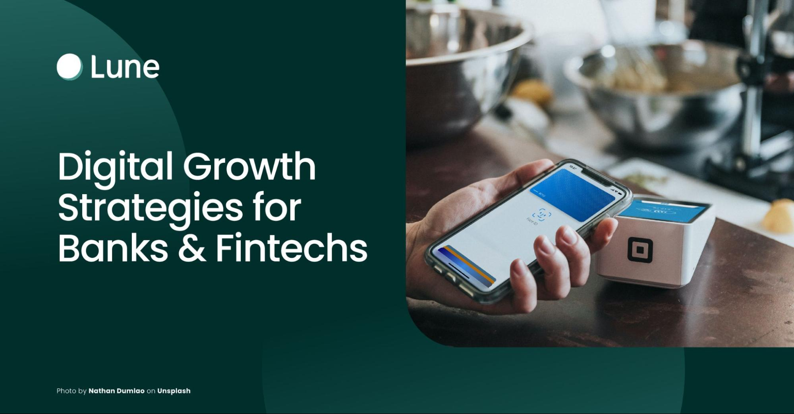

Innovation in Banking: 5 Digital Growth Strategies to Embrace in 2023
In this rapidly changing digital landscape, it's about time for banks and financial institutions to adapt and innovate in the industry.
Published on

In this rapidly changing digital landscape, it's about time for banks and financial institutions to adapt and innovate in the industry. Especially when we're highlighting the MENA region, the days of relying solely on traditional banking products are long gone. Modern consumers demand more than just an ordinary savings account or a standard line of credit. They seek a fully digital banking experience that goes beyond the norm, one that adds real value to their lives and promotes their financial wellness.
At Lune, we've had the privilege of collaborating with some of the most notable banks in the MENA region; we're excited to see them grow and adapt to the current digital landscape. To help them meet those goals, here are our five digital growth strategies that any bank can leverage in 2023 and beyond:
1) Expanding the scope of banking services beyond the traditional offerings
For years, banks have focused on cross-selling to introduce new products to existing customers as a way to increase revenue.
For example, cross-selling happens when banks encourage their customers who already have a savings account to also open a credit card account. By doing so, the bank can generate additional revenue through interest charges on the credit card account.
But now, banks need to explore different strategies and try to truly understand their customer's needs to increase engagement
One way to accomplish this is by having a customer-centric approach and proving to the clients that banks have their best financial interests at heart. To do that, digital banks often integrate with fintech APIs that provide direct value to banking clients. For example, a popular tool among digital banks is a money manager API. This tool allows banking customers to track their spending, make informed financial decisions, and ultimately, achieve greater financial freedom.
2) Automating digital onboarding
The dismal reality of financial institutions in MENA is that the process of opening a business or personal bank account is often fraught with difficulties. Clients are met with unresponsive account managers, the inconvenience of physically visiting a bank, or being hit with callback charges. This dire situation requires financial institutions to reconsider their onboarding process and make the shift toward full automation and digitization. One shining example of this is Mashreq NeoBiz, which offers a seamless and fully-digital onboarding process that can be completed in less than 10 minutes.
3) Simplifying insights with Artificial Intelligence
If there's one thing we've learned at Lune, it's that financial institutions in the region are facing a complex data challenge. Making sense of raw data can severely impact the banking team's efficiency, as banking representatives often have to deal with extremely complicated data.
A potential solution to this challenge is to provide a data analytic platform, which can help transform raw information into meaningful insights for bank representatives to use. Banks typically possess a rich set of exclusive information on their customers, including key demographic details, residential locations, and lifestyle preferences. With the right tools, this bank data can be analyzed to derive valuable insights for companies in industries beyond financial services.
4) Extending value across the customer journey
In the grand scheme of things, what customers truly appreciate is being understood and receiving value that enhances their quality of life. Banks often fall short in this aspect, as they tend to focus solely on one thing and one thing only; Selling to maximize their own revenue.
When it comes to bank-customer relationships, clients focus on the bigger picture, seeking a partnership with their bank to achieve larger goals, such as saving for retirement or buying a home, rather than just a financial transaction.
By overlooking other stages of the decision-making process, banks are missing out on opportunities to provide genuine value to customers. To truly grow, banks must engage with customers beyond traditional banking services. They can achieve this by offering advice through short and easily digestible videos on financial planning, such as determining the best rates and maturities for investments, or providing guidance on how much to save for retirement or borrow for a home. By doing so, banks can establish themselves as trusted advisors, helping to create a bond between the two parties.
5) Leveraging third-party banking solution providers
Partnerships with third-party organizations are essential to furnishing the bank's internal team with the proper resources they need to foster the bank's growth. Third parties can assess workflows, data, and processes to make everything simpler with the help of APIs.
A prime example of this would be the implementation of a financial data enrichment API that transforms complex transactional data into easily comprehensible insights. This, in turn, empowers customers to make better sense of their transactions, enabling them to gain greater control over their finances and enjoy a more delightful user experience.
Thanks to these partnerships, digital banking customers can now easily see logos, locations, dates, times, and transaction details on their statements in a simple and readable format.
Getting started with digital banking innovation
At Lune, we're dedicated to offering our clients the most innovative digital banking experiences to enhance their customers' financial wellness. Contact us today to learn more about how our team can collaborate with yours to create a seamless and delightful digital banking experience for your customers